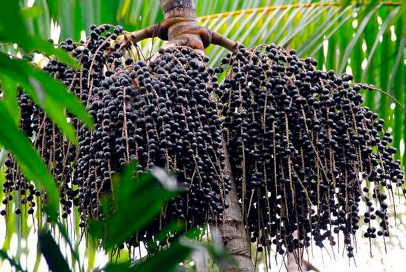
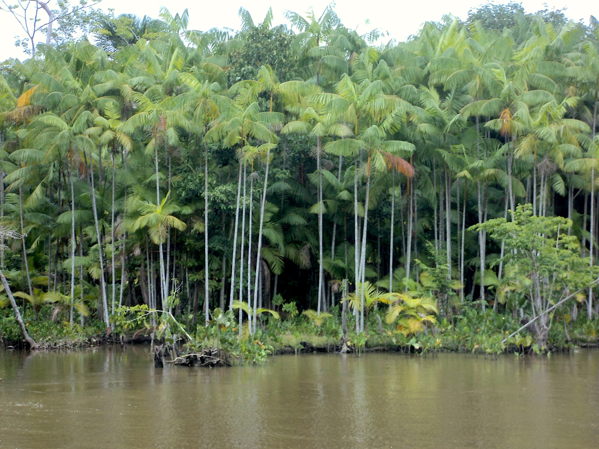
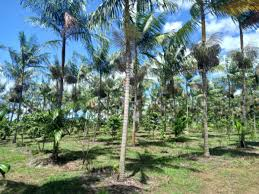
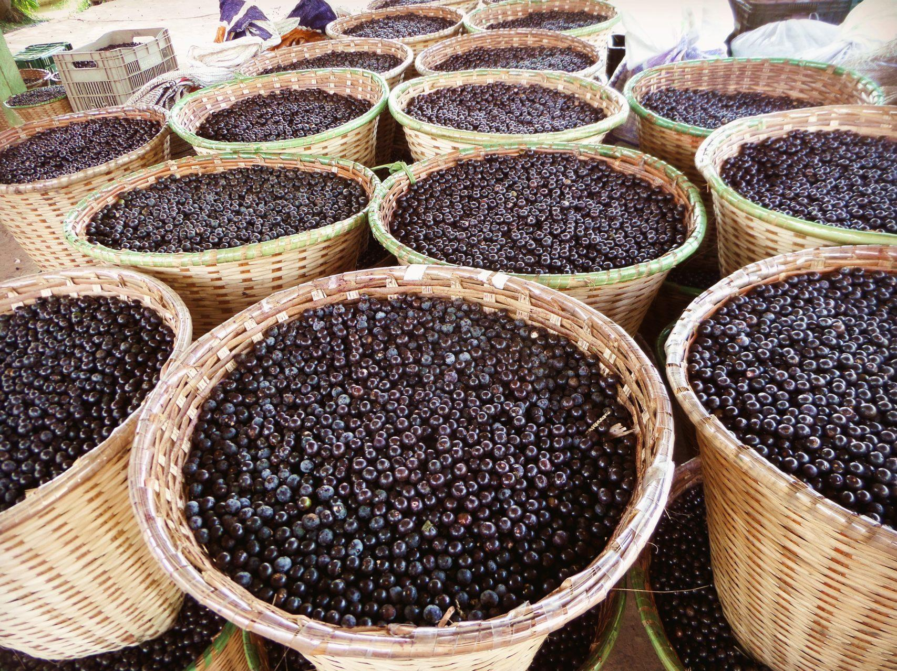

| 🫐 AçaíLink Amazônia | Início Painel Cadastro Relatórios Sair |
|
Painel de Controle Bem-vindo ao AçaíLink Amazônia. Aqui você acompanha em tempo real a produção, os lotes cadastrados e as movimentações dos produtores da região do Baixo Amazonas. Use o menu acima para navegar entre as funcionalidades do sistema. |
 |
| Indicadores do Mês — Junho 2025 |
|
|
|
|
| Regiões Atendidas pelo Sistema |
|
 Baixo Amazonas Principal região produtora de açaí atendida pelo AçaíLink, com comunidades ribeirinhas e produtores familiares cadastrados. |
 Região de Santarém Área de expansão do sistema, integrando novos produtores e cooperativas do município de Santarém e arredores. |
 Produção Local Acompanhamento direto da coleta ao transporte, garantindo rastreabilidade e qualidade dos frutos registrados na plataforma. |
| Últimas Movimentações |
| Lote | Produtor | Município | Quantidade | Data | Status |
| #034 | João Pereira | Santarém | 320 kg | 10/06/2025 | ✔ Entregue |
| #035 | Maria Souza | Óbidos | 210 kg | 10/06/2025 | ⏳ Pendente |
| #033 | Raimundo Costa | Oriximiná | 450 kg | 08/06/2025 | ✔ Entregue |
| #032 | Ana Ferreira | Juruti | 180 kg | 07/06/2025 | ⏳ Pendente |
| #031 | Antônio Lima | Santarém | 390 kg | 06/06/2025 | ✔ Entregue |
| #030 | Francisca Neves | Alenquer | 270 kg | 05/06/2025 | ✔ Entregue |
| © 2025 AçaíLink Amazônia | Sistema de Rastreamento da Produção de Açaí | Baixo Amazonas, Pará |